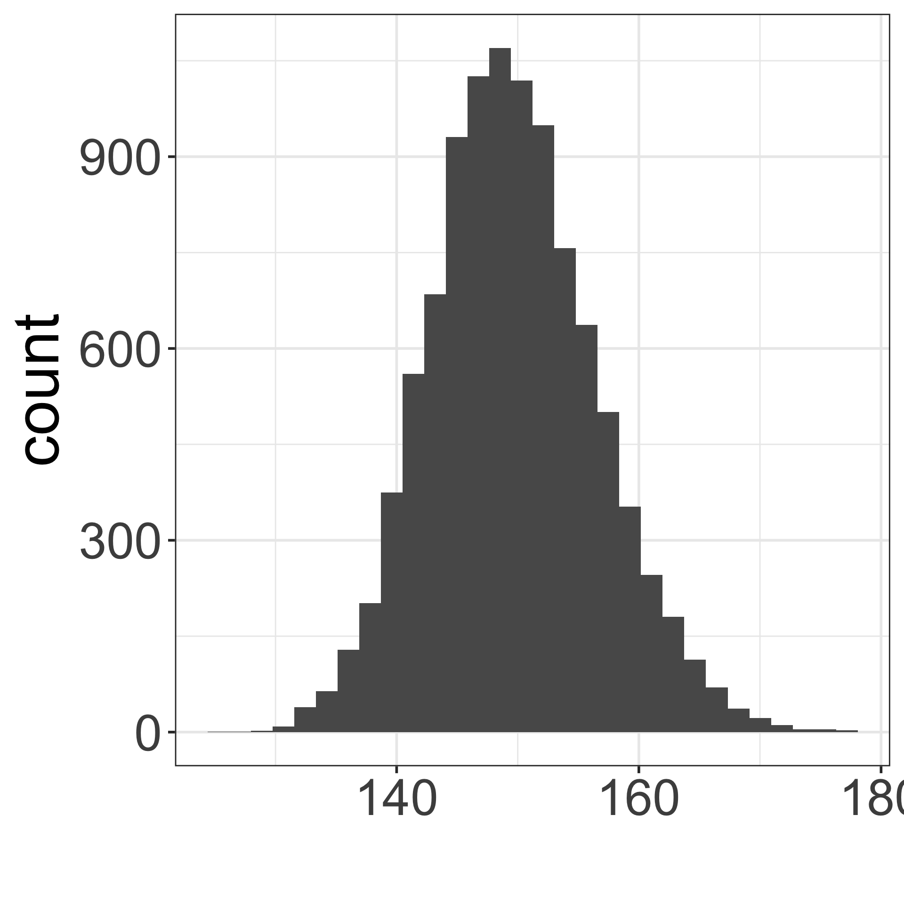
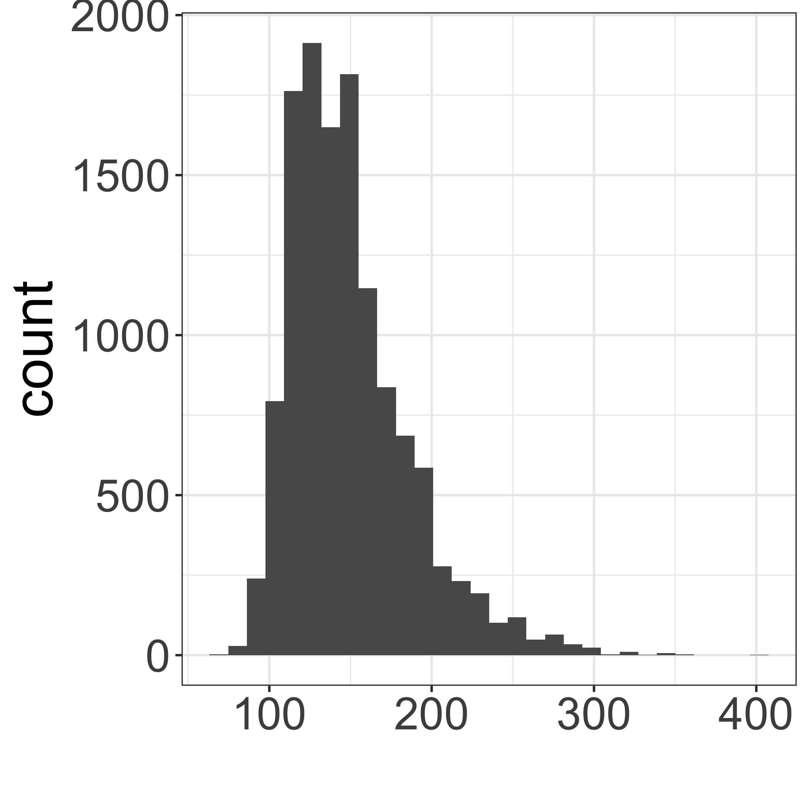

Lesson 8: Variability in estimates
2024-09-25
Where are we?

Goals for today
Section 4.1
- Sampling from a population
- population parameters vs. point estimates
- sampling variation
- Sampling distribution of the mean
- Central Limit Theorem

MoRitz’s tip of the day: add a code pane in RStudio
Do you want to be able to view two code files side-by-side?
You can do that by adding a column to the RStudio layout.

See https://posit.co/blog/rstudio-1-4-preview-multiple-source-columns/ for more information.
Population vs. sample (from section 1.3)
(Target) Population
- group of interest being studied
- group from which the sample is selected
- studies often have inclusion and/or exclusion criteria
Sample
- group on which data are collected
- often a small subset of the population
Simple random sample (SRS)
- each individual of a population has the same chance of being sampled
- randomly sampled
- considered best way to sample

Distribution of 10,000 sample mean heights (n = 5)
Describe the distribution shape.

Calculate the mean and SD of the 10,000 mean heights from the 10,000 samples:
stats_means_hght_samp_n5_rep10000 <-
means_hght_samp_n5_rep10000 %>%
summarise(
mean_mean_height=mean(mean_height),
sd_mean_height = sd(mean_height)
)
stats_means_hght_samp_n5_rep10000# A tibble: 1 × 2
mean_mean_height sd_mean_height
<dbl> <dbl>
1 5.55 0.153Is the mean of the means close to the “center” of the distribution?
Distribution of 10,000 sample mean heights (n = 30)
Describe the distribution shape.

Calculate the mean and SD of the 10,000 mean heights from the 10,000 samples:
stats_means_hght_samp_n30_rep10000<-
means_hght_samp_n30_rep10000 %>%
summarise(
mean_mean_height=mean(mean_height),
sd_mean_height = sd(mean_height)
)
stats_means_hght_samp_n30_rep10000# A tibble: 1 × 2
mean_mean_height sd_mean_height
<dbl> <dbl>
1 5.55 0.0623Is the mean of the means close to the “center” of the distribution?
Compare distributions of 10,000 sample mean heights when n = 5 (left) vs. n = 30 (right)
How are the center, shape, and spread similar and/or different?

# A tibble: 1 × 2
mean_mean_height sd_mean_height
<dbl> <dbl>
1 5.55 0.153
# A tibble: 1 × 2
mean_mean_height sd_mean_height
<dbl> <dbl>
1 5.55 0.0623Sampling high schoolers’ weights
Which figure is which?
- Population distribution of weights
- Sampling distribution of mean weights when \(n=5\)
- Sampling distribution of mean weights when \(n=30\).
A

B

C

The cutest statistics video on YouTube
- Bunnies, Dragons and the ‘Normal’ World: Central Limit Theorem
- Creature Cast from the New York Times
- https://www.youtube.com/watch?v=jvoxEYmQHNM&feature=youtu.be